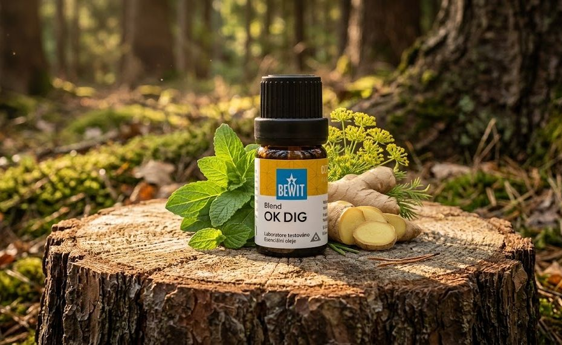

podpora trávení z přírody

Esenciální oleje · květen 2026
Jsou dny, kdy toho bylo prostě moc. Těžký oběd, stres v práci, večeře navíc. Žaludek protestuje, břicho tlačí a vy byste nejraději jen lehli.
Právě pro tyhle chvíle mám vždy po ruce OK DIG od BEWIT.
Je to synergická směs esencí z anýzu, fenyklu, tymiánu, jalovce, kardamomu a zázvoru. Každá z těchto rostlin má za sebou staletí používání při zažívacích potížích — a dohromady tvoří vyvážený celek, který funguje.
Použijte při pálení žáhy, plynatosti, těžkosti po jídle nebo nevolnosti. Ale také tehdy, když cítíte, že něco v životě „nejde strávit" — stres, napětí, těžká situace. Tělo a mysl jsou propojené víc, než si myslíme.
Můžete použít tak, že dáte 1–3 kapky na teplý obklad a přiložíte na žaludek. Jednoduché, rychlé a účinné. Funguje i v difuzéru nebo přidaný do koupele.
Výsledky přicházejí s pravidelností — dopřejte si čas.
🌿 Všechny esence, které na tomto webu doporučuji, jsou od BEWIT. Jako registrovaný zákazník můžete nakupovat se slevou až 50 % na vybrané produkty.
Registrace u BEWIT zdarma →